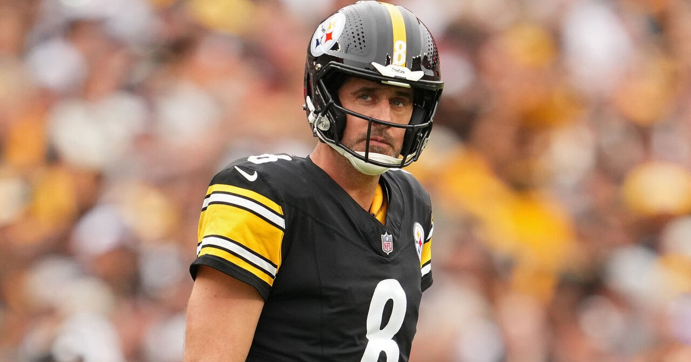

Steelers bench Aaron Rodgers — Mason Rudolph starts Friday, and a 22-year career may have just ended
Pittsburgh announced late Tuesday night that Mason Rudolph will start Friday's Black Friday game against the Broncos — and that Aaron Rodgers will be inactive. One day earlier, Mike McCarthy had said Rodgers was his quarterback.

Disclosure: this post contains affiliate links. I earn a commission on qualifying purchases.
The move
The Pittsburgh Steelers benched Aaron Rodgers on Tuesday night.
In a statement posted by the team on X from senior director of communications Burt Lauten, Pittsburgh announced that Mason Rudolph will start Friday's Week 12 game against the Denver Broncos — and that Rodgers will be inactive for the game. USA Today, Fox Sports, Sports Illustrated, theScore, Heavy and Pro Football Rumors all confirmed the announcement within the hour.
"The Pittsburgh Steelers have named Mason Rudolph the starting quarterback for the game this Friday against the Denver Broncos," the statement read. "Aaron Rodgers will be inactive for the game on Friday."
According to The Ringer's Tom Pelissero, the decision was made by head coach Mike McCarthy and was performance-based — a coach's decision, not an injury call.
The reversal
What makes this stunning is how fast it happened.
On Monday, one day before the announcement, McCarthy was asked whether he had considered turning to Rudolph with the offense struggling. "Aaron Rodgers is our quarterback," he replied, per ESPN's Brooke Pryor. There had been no prior public indication that Pittsburgh was considering a change at quarterback in the middle of a playoff push.
By Tuesday night, the change was made anyway.
The numbers behind it
Rodgers has started 10 games for Pittsburgh this season, completing 60.9% of his passes for 2,241 yards, 16 touchdowns and six interceptions, with an 86.6 passer rating.
The slide came after the Week 9 bye. The Steelers have dropped back-to-back games to the Cincinnati Bengals and the Philadelphia Eagles, and the offense has stalled badly enough that the calls for a change were getting loud before the team made one.
Sunday's 19-16 upset loss to the Eagles was the breaking point. Rodgers completed 30 of 44 passes for 227 yards and a touchdown with no interceptions — a clean line on paper — but the throws barely traveled. His 0.5 air yards per attempt in the first half was the lowest recorded in 20 years, per FOX Sports' Ralph Vacchiano, and FOX's Henry McKenna wrote that Rodgers "is terrified of throwing downfield."
He has also been sacked 31 times through 10 games, and over the last two weeks Rodgers ranks 26th in success rate among quarterbacks.
The replacement
Rudolph is no stranger to this building. Pittsburgh drafted him in the third round in 2018, and he has spent most of his career with the Steelers, appearing in 38 games with 19 career starts. His last start came in 2025 against the Chicago Bears, in relief of an injured Rodgers.
He now gets the start in a game with significant postseason ramifications for both teams: the Steelers host the Broncos on Black Friday, with Pittsburgh sitting at 6-4 and chasing a playoff spot.
What it means
Rodgers announced before the season that he would retire at the end of the 2026 campaign, and he re-signed with Pittsburgh in May after leading the Steelers to a division title in his first year there. He turns 43 in December.
That context is why this benching lands the way it does. Fox Sports framed it plainly: Rodgers "has potentially played the final snap of his legendary 22-year NFL career." Pelissero put it the same way, noting the 42-year-old four-time league MVP "may have played the final snaps of his Hall of Fame career."
Nothing is final yet — the team has said only that Rodgers is inactive for Friday, not that he is done. But a healthy scratch for a quarterback who declared this his final season, benched by the same coach who re-signed him and publicly backed him 24 hours earlier, is not a one-week experiment. It reads like the end.
Friday will tell us whether it is. Rudolph starts. Rodgers watches. And a career that began in 2005 may have ended on a Tuesday night in November, announced in two sentences on social media.
Sources
• Steelers to start QB Mason Rudolph vs. Broncos with Aaron Rodgers benched, per report (USA Today)
• A Steelers Shocker: Aaron Rodgers Benched By Pittsburgh, Will Be Inactive vs. Broncos (Fox Sports)
• Steelers Bench Aaron Rodgers, Name Mason Rudolph Starting QB (Sports Illustrated)
• Steelers bench Rodgers vs. Broncos; Rudolph will start (theScore)
• Why the Steelers benched Aaron Rodgers in jaw-dropping decision (For The Win)
• Steelers Announce 'Stunning' Move With QB Aaron Rodgers (Heavy)
• Steelers Bench QB Aaron Rodgers (Pro Football Rumors)
• Steelers benching Aaron Rodgers vs. Broncos (Sportsnet)
• Breaking: Steelers Name Mason Rudolph Starting Quarterback For Week 12 (Steelers Depot)
• Steelers bench Aaron Rodgers, name Mason Rudolph starting QB vs. Broncos (Behind the Steel Curtain)
Gear up: Fanatics